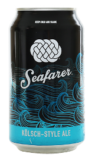

Seafarer
Three Weavers
California, USA
355mL can
4.8% Alc/Vol
Channeling the traditional, light hybrid ale from Koln, Germany, Seafarer is made with German Pilsner Malt and Noble Hop varieties. Our crisp, pale Kolsch is lively, refreshing and a perfect partner for the everyday journey that is life.
The brewery, just over two years old, was founded by certified financial planner and homebrewer Lynne Weaver, who thought a craft brewery could be a captivating intersection of her interests.
Three Weavers doesn't focus on the trophy IPAs or the envelope-pushing wild ales that beer geeks line up to purchase. Instead, the beers are about striking a balance between traditional techniques and styles and showcasing the best ingredients in the world. From Kölsch to pale ale to English porter, these pints aren't flashy — they're polished and nuanced. Sleeper brews among a field of hot-rod beer.
Beer cans in Japan have braille on them so blind people don't confuse alcoholic drinks with soft drinks.